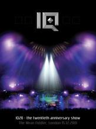

| Artist: | iQ |
| Title: | IQ20-The Twentieth Anniversary Show |
| Label: | GEP GEPDVD9002 |
| Length(s): | 230 minutes |
| Year(s) of release: | 2003 |
| Month of review: | [09/2005] |
| 1) | Awake And Nervous | |
| 2) | The Thousand Days/The Magic Roundabout | |
| 3) | Erosion | |
| 4) | State Of Mine/Leap Of Faith/Came Down | |
| 5) | The Seventh House | |
| 6) | The Narrow Margin (Middle Section) | |
| 7) | Human Nature | |
| 8) | Capricorn | |
| 9) | Just Changing Hands | |
| 10) | Guiding Light | |
| 11) | Headlong | |
| 12) | The Last Human Gateway |
Disc 2
| 1) | Subterrenea | |
| 2) | Jet | |
| 3) | Crazy Horses | |
| 4) | The Wake | |
| 5) | Sleep Until You Wake (The Lens) | |
| 6) | Choosing A Farmer (Part 3) (The Lens) | |
| 7) | Of Tide And Change (The Lens) | |
| 8) | Mamma Mia/Out Of Nowhere |
Wedged between Came Down and The Seventh House the band sing a little happy birthday song for Postman Pat. Sax player Tony Wright is brought to perform in Human Nature and Capricorn, and long time bass player Tim Esau performs on Headlong (performed live by the five piece that recorded it for the first time, here) and The Wake. The concert has a fair mix of tracks, with a slight emphasis on the first two albums (making me a happy man), thus reflecting the band's history.
The first disc contains the two hours of the main concert, whilst the second displays the encores and assorted extra bits and pieces. This is where the guys lose their seriousness. The first signs show with the reggae rhythm in Subterranea. But then they run off into Wings' Jet followed by The Osmonds' Crazy Horses (without the neighing). The following The Wake only moderately succeeds at returning seriousness.
Apart from that we find a 23 minute concert of The Lens material. Vocalist Nicholls has disappeared off the stage for this support concert by IQ's predecessors. The music is quite open and melodic, fitting in more with Are You Sitting Comfortably then IQ's first two albums.
Apart from this we get a photo gallery, with lots of old pics, the item Cookie Cam, in which we see Paul filmed from below during the show. Nice to put Cook in the spotlight, but not very interesting outside that. We get a four minute medley of Mamma Mia and Out Of Nowhere (IQ's, not Faith No More's). Not very interesting musically, but seeing Nicholls and Holmes redo the duo vocals (the one singing in the other's neck) is pretty funny. Then there's the three combinations of intros and outros which are all incredibly silly (probably best ingested after several pints of lager). And we get the stage setup with a double speed electro version of Corners. To top it off we get a half hour documentary showing rehearsals, soundcheck and such that normally stay outside the public eye.